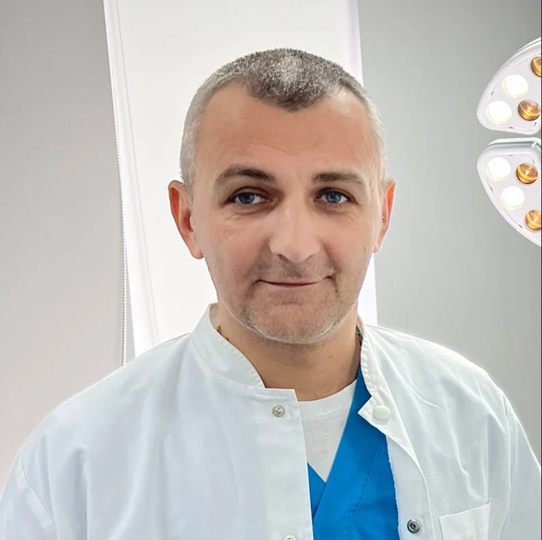

Medic chirurg specialist cu peste 10 ani de experiență în domeniul chirurgie generală. Ofer servicii medicale de calitate la cele mai înalte standarde profesionale.
Programează-te
Sunt dr. Adrian Moldoveanu, medic specialist în chirurgie generală, cu o experiență solidă și dedicată în tratarea afecțiunilor chirurgicale. Am absolvit Facultatea de Medicină din Timișoara în anul 2009 și am devenit specialist în chirurgie generală în cadrul Spitalului Clinic Municipal de Urgență Timișoara.
De-a lungul carierei mele, am participat la sute de intervenții chirurgicale, tratând cu succes o gamă largă de afecțiuni - de la patologii simple precum furuncule și abcese, până la cazuri complexe de eventrații și hidrocele. În activitatea mea, folosesc tehnici moderne minim-invazive, cu accent pe recuperarea rapidă și confortul pacientului.
Sunt asistent universitar, implicat activ în formarea noii generații de medici, iar pasiunea pentru medicină se reflectă în fiecare interacțiune cu pacienții mei. Comunicarea, empatia și profesionalismul sunt valori care mă ghidează constant.
Ofer consultații și intervenții chirurgicale în următoarele domenii, cu accent pe calitate, empatie și inovație medicală:
Evaluări medicale amănunțite, diagnostic de precizie și planuri de tratament personalizate.
ProgramareReevaluare obiectivă a unui diagnostic sau tratament, oferind siguranță suplimentară pacientului.
Solicită opinieIntervenții rapide pentru cazuri acute, în colaborare cu spitale acreditate, disponibil 24/7.
Contact rapidTehnici minim invazive pentru o recuperare rapidă și riscuri reduse postoperator.
Tratamentul herniilor inghinale, ombilicale sau postoperatorii cu tehnici moderne și durabile.
Intervenții asupra glandei tiroide cu monitorizare nervoasă intraoperatorie pentru siguranță maximă.
Tratamentul chirurgical al tumorilor benigne și maligne cu abordare multidisciplinară.
Urmărire atentă a evoluției și ajustări ale tratamentului în funcție de răspunsul pacientului.
Continuă tratamentulEvaluare medicală completă, analize și investigații necesare pentru intervenții în siguranță.
Pregătește intervențiaPărerea pacienților mei este foarte importantă. Iată câteva dintre recenziile lor:
"Cele 5 stele i se datoreaza pentru domnul dr.Moldoveanu Adrian pentru munca ce a facuto pentru tatal meu.Domnul Adrian l-a operat pe tatal meu cu succes si se simte foarte bine,se vede ca este in om care iubeste cea ce face si o face din dragoste si placere.Este un doctor care se implica foarte mult si garanteaza cea ce face.Tatal meu a spus ca a avut conditi bune si asistentele sa purtat foarte frumos cu el.Va multumesc domnul doctor Moldoveanu Adrian pentru cea ce ati facut.Multa sanatate!!!"
"Multe multumiri domnului dr. Adrian Moldoveanu. Am fost pacientul dansului in urma unui accident rutier. Datorita nivelului ridicat de profesionalism si atentie pe care le-am primit din partea dansului, astazi sunt 100% recuperat. Un lucru care mi-a atras atentia, desi nu am reactionat la momentul respectiv datorita apatiei generate de traumatism, a fost cum in mod regulat, chiar si noptiile, dl.doctor Adrian Moldoveanu deschidea usa salonului si se apropia de mine intr-un mod parintesc sa vada cum ma simt. Intr-o tara in care ducem lipsa acuta de profesionisti, mai exista si medici precum dl. Adrian Moldoveanu care aduce incredere si siguranta in sufletele pacientiilor, in special in acele momente delicate si sensibile in care ne putem afla oricare dintr-e noi. Va multumesc din suflet domnule doctor. Sa va dea Dumnezeu sanatate."
"Un medic deosebit de atent si competent! Mi-a salvat unchiul dintr-o situatie extrem de delicata cu sanse mici de supravietuire. Domnul Moldoveanu a fost sigurul Doctor care a aratat interes pentru viata pacientului in timp ce alte spitale din apropierea Timisoarei ar fi dorit sa il externeze cu un verdict mult prea trist pt un om atat de tanar 🙏🏻"
Str. Martir Cernăianu, nr 30, Timișoara, Timiș 300361, România
Luni-Vineri: 09:00 - 18:00
Sâmbătă-Duminică: Închis